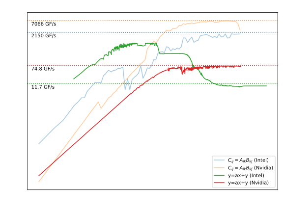
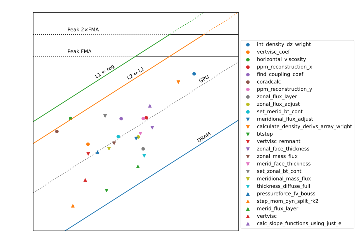
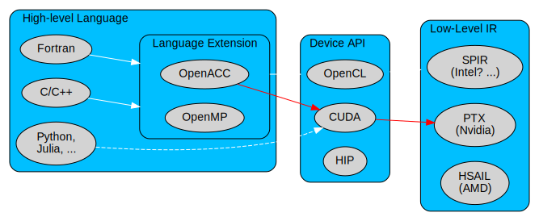
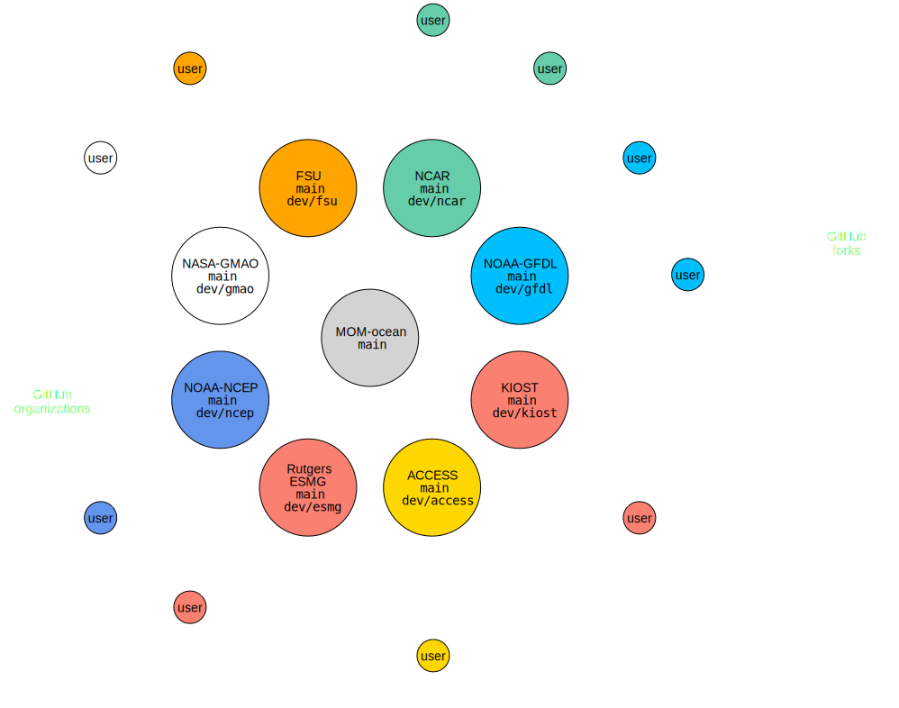

Marshall Ward
NOAA-GFDL
2024-08-28
Nvidia GPUs
|
Intel CPUs
|
2x GPU speedup if using tensor cores
Peak computation:
| Arch | Year | SMs | Cores | FMA | Clock (GHz) | TFLOPs |
|---|---|---|---|---|---|---|
| V100 | 2017 | 80 | 32 | 2 | 1.37 | 7.0 |
| A100 | 2020 | 108 | 32 | 2 | 1.41 | 9.7 |
| H100 | 2022 | 114 | 64 | 2 | 1.755 | 25.6 |
(2x with Tensor cores)
| CPU | Year | Cores | AVX | FMAc | Clock | TFLOPs |
|---|---|---|---|---|---|---|
| 8274 | 2019 | 24 | 8 | 4 | 2.8 | 2.1 |
| 8368 | 2021 | 38 | 8 | 4 | 3.4 | 4.1 |
| 8592 | 2023 | 64 | 8 | 4 | 4.0 | 8.2 |
| 6780 | 2024 | 144 | 8 | 4 | 3.0 | 13.8 |

Nvidia GPUs
|
Intel CPUs
|

At least memory bound, certainly not compute bound
do concurrent, lower level?
Rewrite?do concurrent |
|
Not strictly parallel (only "arbitrary order") and subject to many internal constraints, more than OpenACC loops.
OpenACC decoration can overcome some of these problems.
Ignore MPI for GPU builds? Assume PE == 1?
Consider MPI across nodes, GPU on-node?
Component parallelization (e.g. global barotropic on GPU?)
Serious GPU runs need multiple cards.
How (if at all) do we integrate this into FMS parallelization?

Red arrows show the Nvidia toolchain
|
Competitors are developing GPGPUs, with similar support:
ifort will never offload, only ifxCUDA: Nvidia proprietary language and Runtime
OpenCL: Open alternative for Intel, AMD, and Nvidia(?)
HIP: AMD-only alternative, part of AMD ROCm
SYCL is a newer cross-platform alternative
These are rather low-level and often not easy to use. Probably unrealistic to expect scientists to write at this level.
Assembly-like IRs, with some cross-vendor support:
Although these are somewhat generic, for practical purposes they are associated with particular hardware.
$acc kernelsMonitoring of Nvidia forums suggests comparable performance (and perhaps more attention to OpenMP at the moment).

Codebase is governed by a consortium of research groups. All changes to the "hub" must be tracked and preserved. Groups manage their own branch, and contribute to
|
Focus on Nvidia, start with OpenACC
Nvidia has first-class support for OpenACC -> CUDA conversion, and we can expect the highest level of support.
Explore transition to OpenMP
OpenMP and OpenACC mirror each other, with some nuances
Embrace language-specific constructs
do concurrent with OpenACC/OpenMP may allow for
convergence of CPU and GPU code blocks.
Focus on single-GPU then...